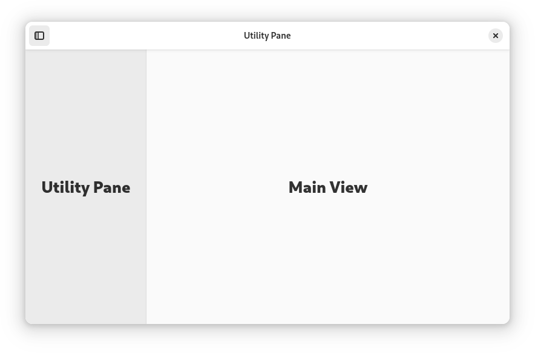
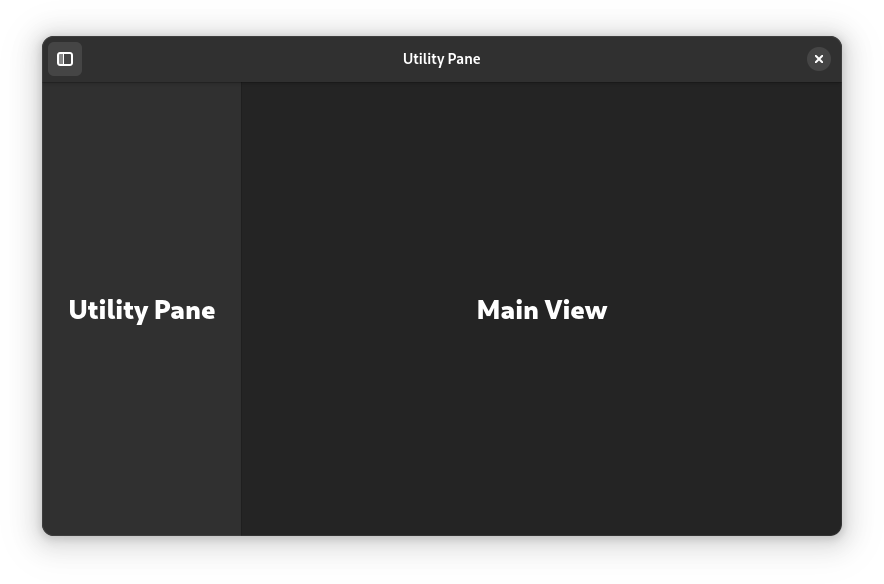

Utility Panes#
 Utility panes are vertical panels which are shown on one side of a window. They have some similarities with sidebars, but play a different role and have a unique behavior.
When to Use#
Use a utility pane to display additional controls, locations or information alongside the main window view. The content of the utility pane should be relevant to the main view, and can include things like a tools palette, browser history, spell checking results, or document metadata.
Popovers are an alternative to utility panes which can be considered.
Guidelines#
Utility panes can appear on the left or right side of the window. To decide on a position, follow the visual and functional hierarchy of the window: if the pane affects the main view, place it on the left. If it is subordinate to the main view, place it on the right.
Utility panes can be permanent or transient. When transient, utility pane visibility can be toggled by the user, or panes can be shown when particular features are in use.
Unlike sidebars, utility panes do not intersect the header bar.
To support adaptive scaling, ensure that a utility pane will overlap the main view when there isn’t available width to show it alongside. This can be achieved with a flap widget.
If utility pane visibility can be toggled, assign the F9 key as a shortcut.